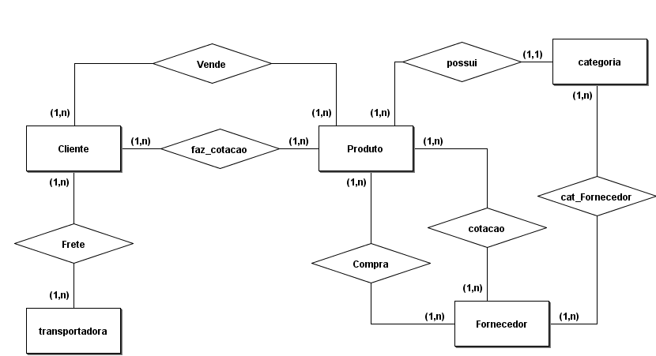

Sobre a Morgan Devs
A Morgan Devs foi criada por sua equipe de desenvolvedores nerds, altamente qualificados
(e modestos, claro), que encontraram a inspiração perfeita no gênio mais carismático da franquia MARVEL:
Homem de Ferro.
Tony Stark, o bilionário filantropo — e tão modesto quanto nós —, termina sua jornada nos cinemas
deixando um legado: sua filha, Morgan Stark.
Pois é, numa mistura de lágrimas e amor por tecnologia, nossa equipe decidiu homenagear o maior cérebro (e ego) da Marvel,
dando o nome de Morgan Devs para nosso time.
Bem-vindo à Morgan Devs!
Aqui você encontra soluções práticas, dinâmicas e tão poderosas quanto a Mark LXXXV
(aquela armadura lindona do Tony, caso tenha esquecido).
Nós ajudamos o seu negócio a crescer, inovar e dominar o mundo... ou pelo menos o seu segmento de mercado.
P.S.: Se você não entendeu a referência, por favor...
MARATONE OS FILMES AGORA MESMO.
Sério. Você está vivendo errado.
Projeto Integrador 2º Semestre
O Projeto da MVS Info consiste em facilitar o dia a dia do cliente, visto que somente ele é responsável
por todas as etapas do processo, desde captar cliente, até o último passo, que é a entrega do produto.
Sendo assim, nós desenvolvemos um sistema que faz a ponte entre cliente / fornecedor, a qual era feitra somente
com intermediação do responsável pela MVS.
Agora os clientes irão solicitar o orçamento através do sistema e, ao escolher a categoria, o fornecedor referente
irá ter acesso ao orçamento em aberto, irá preencher e a partir daí somente que, a pedido do cliente, será
feito manualmente, que é a revisão do orçamento enviado pelo fornecedor, envio para o cliente e aprovação da proposta.
Proposta MVS Info
Modelo Conceitual

Fluxograma
Diagrama de sequencia

Diagrama de classes
Segue as funcionalidades principais do sistema
✅ Clientes
- Cadastro e login
- Solicitação de orçamentos com múltiplos produtos
- Acompanhamento de status de pedidos
✅ Fornecedores
- Cadastro e login
- Preenchimento de propostas para orçamentos
- Atualização de preços e produtos
- Visualização do status dos pedidos
✅ Admin
- Cadastro/edição de clientes, fornecedores, produtos, categorias, transportadoras
- Visualização de operações, relatórios de vendas, orçamentos e fretes
- Aprovação ou reprovação de orçamentos
✅ Relatórios
- Vendas detalhadas por produto, valor de compra, venda, imposto e lucro
- Situação de orçamentos (aprovados / reprovados)
Apresentar o Sistema MVS INFO